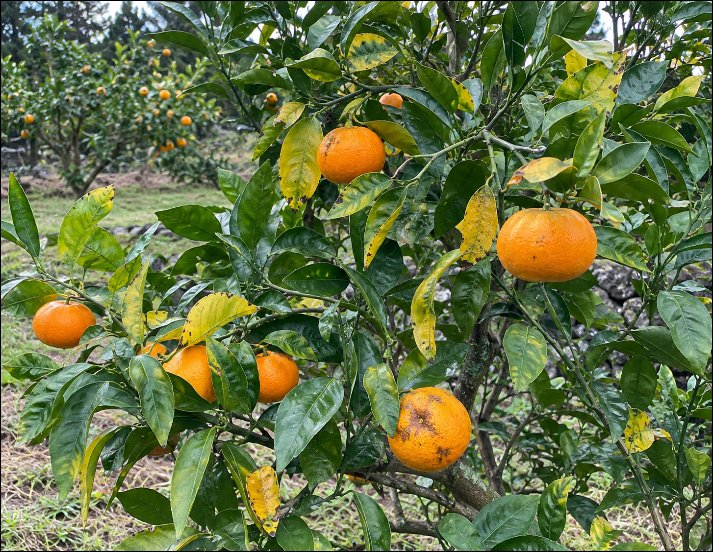
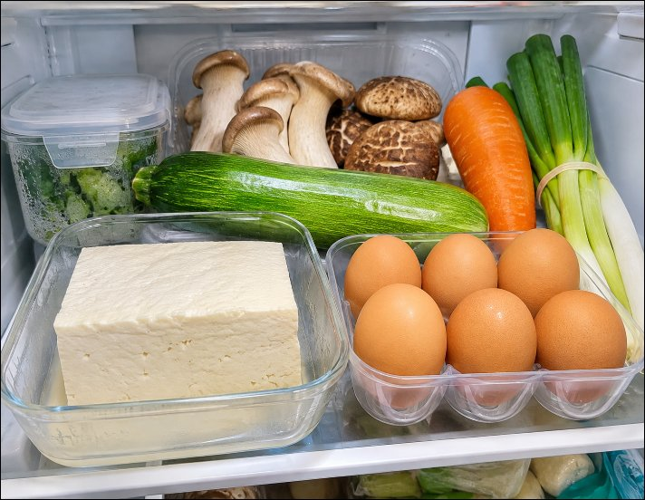

📖 오늘 배우는 것
스마트폰으로 AI 시작하기
① 앱 2개 설치하기: 챗지피티 · 제미나이
- Play 스토어 열기
- 아래쪽 검색(돋보기) 누르기
- 위쪽 검색창에 ChatGPT 또는 Gemini 입력
- 설치 누르기
⚠️ 비슷한 로고에 속지 마세요
- 앱 이름: ChatGPT / 개발사: OpenAI
- 로고만 보지 말고, 앱 이름과 개발사를 꼭 확인!
② 스마트폰 점검 (하나씩 눌러 체크)
③ 오픈채팅방 들어오기
- 카메라를 열고 QR에 비추기
- 화면에 뜬 링크 누르기
- ‘참여하기’ 누르기
④ 한 화면에 모아 두기
아래 5개 앱을 첫 화면 한곳에 모아 두면 수업이 편해요.
설정 · 플레이스토어 · 제미나이 · 챗지피티 · 오픈채팅방
⑤ 스마트폰 아래 버튼 3개
| ||| 최근 실행 앱 | 앱과 앱을 오갈 때 |
| ○ 홈 | 첫 화면으로 갈 때 |
| < 이전 단계 | 바로 앞 화면으로 |
💡 앱을 닫지 마세요
챗지피티·제미나이·단톡방은 닫지 말고, 최근 실행 앱 버튼(|||)으로 옮겨 다니세요.
AI와 함께하는 새로운 일상
전화번호부가 스마트폰으로, 종이 지도가 내비게이션으로 바뀌었듯, 이제는 말 한마디로 묻고 답을 받는 시대입니다. 배우면 시간을 아끼고, 정보와 기회가 넓어져요.
| AI에게 부탁하면 좋은 일 | 내가 꼭 확인할 일 |
|---|---|
| 궁금한 것 바로 묻기 | 답이 맞는지 한 번 더 확인 |
| 글·안내문·이미지 만들기 | 개인정보·계좌는 입력하지 않기 |
| 외국어 연습·대화 | 구매·예약·계약은 직접 확인 |
활용은 똑똑하게, 결정은 신중하게!
👗 따라 해 보기: 입고 싶은 옷 미리 입어 보기
내 사진 1장 + 입고 싶은 옷 사진 1장을 함께 올린 뒤 붙여 넣으세요.
ChatGPT 기본 기능 익히기
① 화면 둘러보기
| ☰ 메뉴 (왼쪽 위) | 이미지, 라이브러리, 프로젝트 등 다양한 메뉴 |
| 질문 입력 (아래) | 글자를 쓰거나 마이크로 말하기 |
| 내 계정 (메뉴 아래) | 로그인 확인, 개인 맞춤 설정 |
② 이미지 만들기 템플릿
메뉴 → 이미지로 들어가면 ‘3D 캐릭터’, ‘드론 뷰’, ‘손글씨’처럼 이미 만들어진 스타일이 있어요. 마음에 드는 것을 누르고 내 사진만 올리면 손쉽게 완성됩니다.
③ 라이브러리: 만든 이미지 모아 보기
- 🔍 검색하기 — 이전에 만든 이미지·파일 찾기
- ⬇️ 저장하기 — 이미지를 지그시 누르면 ‘갤러리에 저장’
- 💬 채팅 열기 — 이미지를 톡 누르면 만들었던 대화로 이동
- 🗑️ 삭제하기 — 필요 없는 이미지 지우기
④ 새 채팅 사용하기
💡 같은 이야기는 이어서, 다른 이야기는 새 채팅에서!
ChatGPT는 앞에서 나눈 대화를 기억하며 답해요. 주제가 바뀌면 오른쪽 위 새 채팅 버튼을 누르세요.
사진으로 질문하고 AI 이미지 만들기
아래 [복사] 버튼을 누르고, ChatGPT 입력창을 길게 눌러 ‘붙여넣기’ 하세요.
① AI가 도와주는 현명한 의사소통
② 어려운 문서, AI로 쉽게 이해하기
문서를 사진으로 찍거나 파일로 첨부한 뒤 붙여 넣으세요.
③ AI와 함께하는 똑똑한 여행 계획
④ 사진 한 장으로 AI에게 물어보기
| 꽃·나무 사진 | 이 식물의 이름과 특징, 꽃말을 알려줘. |
| 관광지·건축물 | 이곳이 어디인지 알려줘. |
| 제품 설명서 | 어려운 설명을 쉽게 풀어주고, 사용 순서를 알려줘. |
| 냉장고 속 재료 | 이 재료로 만들 수 있는 건강한 반찬 3가지 추천해줘. |
| 외국어 메뉴판 | 한국어로 번역해 주고, 현지어로 어떻게 말하는지 알려줘. |
📸 사진 올리는 법
- 입력창 왼쪽 ＋ 누르기
- 카메라(바로 찍기) 또는 사진(갤러리에서 고르기) 선택
- 질문을 붙여 넣고 보내기(↑)
나누어 드린 외국어 메뉴판을 ChatGPT 카메라로 찍어서 번역해 보세요. 현지어로 어떻게 말하는지도 알아봐요.
종이 메뉴판이 없으면 아래 사진을 내려받아 ＋ → 사진으로 올리세요.


실습 2~4는 아래 사진을 내려받아 올리고, 질문을 붙여 넣으세요.

⬇ 실습 사진 내려받기
버튼이 안 되면 사진을 길게 눌러 ‘이미지 저장’ 하세요.

⬇ 실습 사진 내려받기
버튼이 안 되면 사진을 길게 눌러 ‘이미지 저장’ 하세요.

버튼이 안 되면 사진을 길게 눌러 ‘이미지 저장’ 하세요.
⚠️ 건강·약 관련 답변은 참고용
정확한 진료와 복용 상담은 반드시 의사·약사에게 받으세요.
🎨 쓸모있는 이미지 만들기
① 글로 이미지 만들기
② 배경·색상·스타일 바꾸기 (같은 대화창에서 이어서)
③ 프로필 사진·증명사진·스티커 만들기
＋ → 사진 선택으로 내 얼굴 사진을 먼저 올린 뒤 붙여 넣으세요.
바꿔 쓸 말: 귀여운·재미있는·웃기는·미소 짓는 / 좋은 아침·안녕·반가워·고마워·사랑해·감사해요
💡 따옴표 안 12개 문구를 내 마음대로 바꿔 써도 돼요.
④ 소중한 옛날 사진 보정하기
💾 만든 이미지 저장하기
- 이미지를 길게 누르기 → 저장
- 이미지를 눌러 크게 본 뒤 위쪽 ⬇ 버튼으로 저장
- 크게 본 화면 아래 편집 버튼으로 고칠 부분만 수정도 가능
음성대화와 제미나이 활용하기
🔒 먼저, ChatGPT 안전하게 쓰기
임시채팅 — 오른쪽 위 점선 말풍선 아이콘. 기록에 남지 않고, 기억(메모리)에도 저장되지 않아요.
이럴 때: 폰을 잠깐 빌려줄 때, 한 번만 묻고 끝낼 때, 남에게 묻기 어려운 고민
메모리 — 설정 → 개인 맞춤 → 메모리. ChatGPT가 나에 대해 기억하는 내용을 확인하고, 틀린 내용은 고쳐 달라고 할 수 있어요.
모두를 위한 모델 개선 — 설정 → 기록 및 데이터. 끄면 내 대화가 AI 학습에 쓰이지 않아요. 개인적인 이야기를 자주 나눈다면 꺼 두세요.
🎤 버튼 두 개의 차이
| 🎤 마이크 버튼 | 말을 글자로 바꿔 줘요. 타자 대신! |
| 🔊 음성대화 버튼 | AI와 말로 대화해요. 상담·질문·외국어 연습 |
음성대화로 이렇게 말해 보세요
💡 핵심
한 번 말하고 끝내지 말고, 사람과 대화하듯 주고받으며 계속 이야기해 보세요.
나만의 원어민 영어 선생님
✨ 구글 제미나이로 할 수 있는 것
- 📅 구글 캘린더·메일·유튜브와 연결
- 🗣️ 음성대화 (라이브 기능)
- 📷 라이브 중 카메라 — 내가 비추는 것을 함께 보며 대답
- 📲 라이브 중 화면 공유 — 내 폰 화면을 함께 보며 대답
- 🎮 캔버스로 웹페이지·게임 만들기
💡 가이드 비전 켜 두기
설정 → 음성 → Live의 가이드 비전을 켜면 카메라로 비출 때 더 자세히 설명해 줘요.
📲 화면 공유 100배 활용하기
| 이 화면을 열고 | 이렇게 물어보세요 |
|---|---|
| 설정 앱 | “글씨 크기를 크게 키우려면 뭘 눌러야 해?” |
| 기차표·쇼핑 결제 확인 창 | “내일 오전 10시 대전행 KTX 표 맞게 고른 거 맞아?” |
| 의심 문자 (링크는 누르지 말 것!) | “방금 온 택배 문자 진짜 맞아? 사기 문자 아니야?” |
| 길찾기 지도 화면 | “지하철에서 내려서 몇 번 출구로 나가야 가장 빨라?” |
| 카톡으로 받은 긴 글 | “눈 아파서 읽기 힘든데 핵심만 쉽게 말로 요약해 줘.” |
⚠️ 화면 공유 중 꼭 주의!
카톡 대화, 문자 알림, 은행 앱 화면이 그대로 보일 수 있어요. 은행·카드 앱을 열거나 비밀번호를 입력할 때는 먼저 화면 공유를 꺼 주세요(X 버튼).
🎮 캔버스로 게임 만들기
제미나이 입력창 ＋ → Canvas 선택 후 붙여 넣으세요. “스마트폰 터치로…”를 넣으면 손가락으로 누르는 큰 버튼이 생겨요.